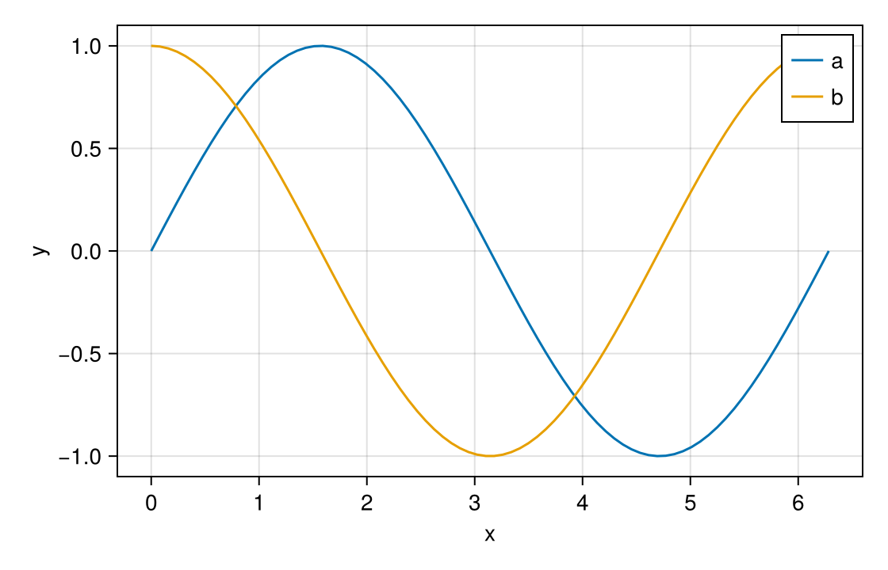

Legend
Hover a legend entry to highlight the series it labels, and click it to send that series to your notebook. masque(fig) makes every Legend and axislegend interactive and links each entry to the plots it describes.
Notebook as text
Click a legend entry, and the last cell names that series while its line stays highlighted. Click it again to clear it.
begin
xs = range(0, 2π; length = 80)
fig = Figure(size = (560, 360))
ax = Axis(fig[1, 1]; xlabel = "x", ylabel = "y")
lines!(ax, xs, sin.(xs); label = "a")
lines!(ax, xs, cos.(xs); label = "b")
axislegend(ax)
nothing
end@bind pick masque(fig; bind = :legend)
isnothing(pick) ? "click a legend entry" : "$(pick.label) selected"click a legend entryWhat a click returns
Clicking an entry keeps its series picked out and sets the legend's field, sel.legend, to a LegendEvent. The example above passes bind = :legend, so the value, pick, is the event itself.
pick.label is the entry's text, pick.group is the group title in a grouped legend (nothing otherwise), and pick.targets lists the names of the plots the entry highlights, such as ["lines_2"]. Click the entry again to clear the highlight, and pick is nothing again.
In a Makie window, clicking a legend entry hides its series. In a masque figure the click selects the series instead: the other series fade, and nothing is hidden. To hide a series, create a second figure without it in a cell that uses pick, the way the next section does.
A figure with a second legend gives sel.legend_2 in the same way, and plots that take clicks keep their own fields.
Fade the other series
To fade the series you did not click, create a second figure in a cell that uses pick. In the same notebook as above:
Notebook as text
begin
focus = isnothing(pick) ? nothing : pick.label
fig2 = Figure(size = (560, 360))
ax2 = Axis(fig2[1, 1])
for (label, f) in (("a", sin), ("b", cos))
faded = !isnothing(focus) && label != focus
lines!(ax2, xs, f.(xs); label, alpha = faded ? 0.2 : 1.0)
end
fig2
endYou can use pick.label the same way to filter a table, choose which series to fit, or update any other cell.
Highlight a series on every panel
A legend entry picks out its series on every axis where the series appears, not only the axis the legend sits on. Hover an entry below and both panels highlight its points:
Notebook as text
Hover over a legend entry, and every point in that series highlights on both axes.
Label each scatter plot and put both in one Legend, so hovering over an entry highlights the series it names.
begin
xs = [1.0, 2.0, 3.0, 4.0]
ys = [2.0, 1.5, 3.0, 2.2]
zs = [0.8, 2.5, 1.2, 3.1]
fig = Figure(size = (700, 280))
ax_xy = Axis(fig[1, 1]; xlabel = "x", ylabel = "y", title = "xy")
ax_xz = Axis(fig[1, 2]; xlabel = "x", ylabel = "z", title = "xz")
p_xy = scatter!(ax_xy, xs, ys; label = "xy", markersize = 18)
p_xz = scatter!(ax_xz, xs, zs; label = "xz", markersize = 18)
Legend(fig[1, 3], [p_xy, p_xz], ["xy", "xz"])
nothing
end@bind pick masque(fig; bind = :legend)
Choose which plots an entry highlights
Each entry highlights the plots Makie made it for: the line for a lines! entry, the points and the line for scatterlines! and stem!, and one series of a series! plot. To have an entry highlight other plots as well, such as a scatter of the same data on another axis, pass targets= to LegendInteractable, with each label mapped to the names of the plots it should highlight. What masque(fig) builds lists those names:
LegendInteractable(leg; targets = Dict("a" => :lines, "b" => [:lines_2, :scatter]))A label or plot name that does not exist raises an ArgumentError, so a typo shows up right away. A legend you build yourself from LineElements has no plots linked to its entries, so they highlight nothing until you pass targets=, or give each element Makie's own plots= keyword.
Add a tooltip to each entry
Legend entries show no tooltip by default, because the label is already on screen and a tooltip would cover the neighboring entries. To add one, pass a template that uses the fields label, group, and targets:
LegendInteractable(leg; tooltip = masque"$(label) ($(group))")See Tooltips for how templates work.
Keep a series highlighted after a rebuild
A legend click is lost when the cell that creates the figure runs again, because the new figure starts with no entry selected. To start it with an entry selected, pass the entry's position in the legend, counting from the top, as selected:
@bind pick masque(fig; bind = :legend, selected = (legend = 2,))The second entry's series starts highlighted, and pick starts as its LegendEvent. See Selection for more on selected.
Next, Keyboard and screen readers shows how to reach legend entries with the keyboard.